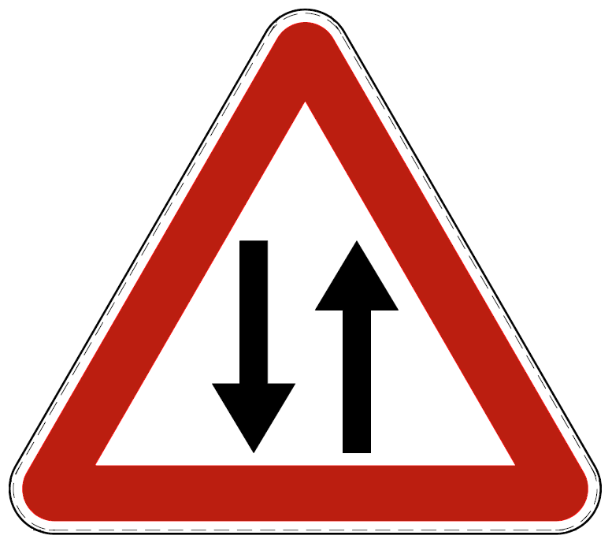
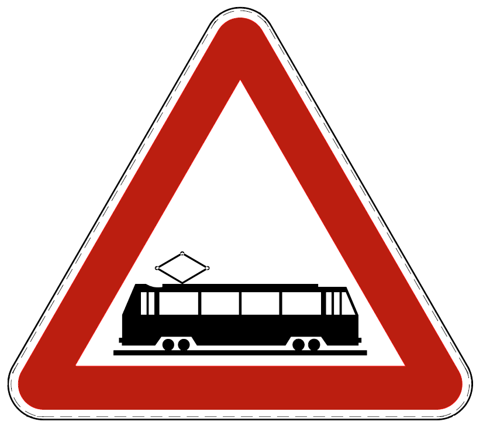
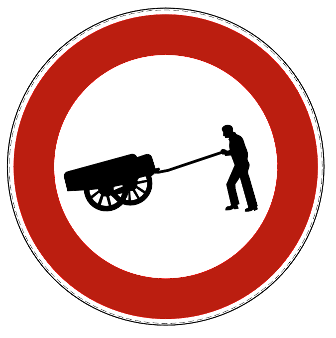
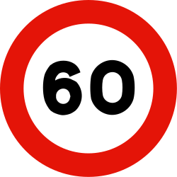
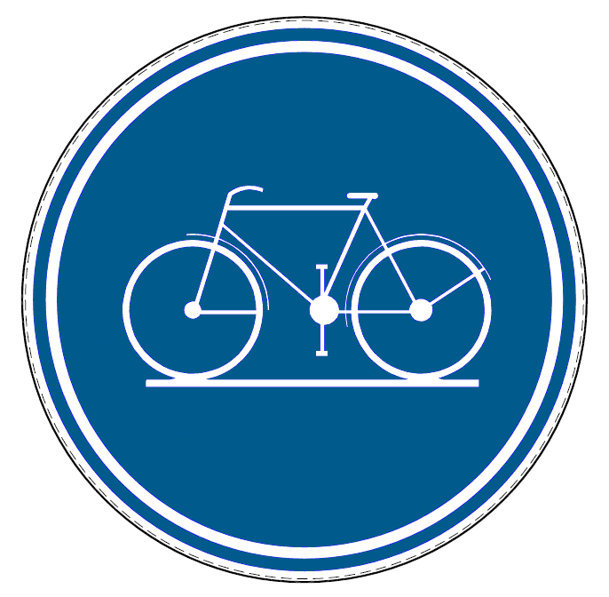
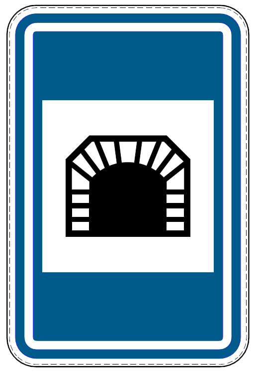
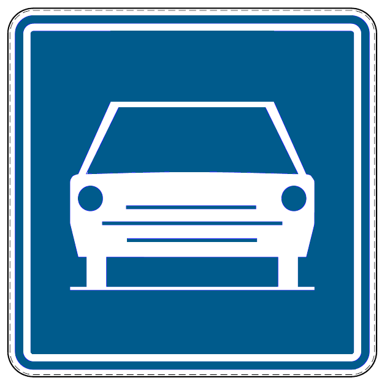
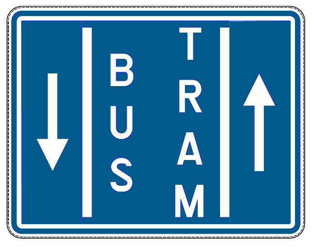
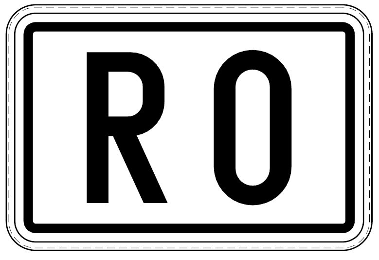

un Triangle rouge sera toujours un panneau de danger, un rond rouge est un panneau d'interdiction, un rond bleu est un panneau d'obligation
Signaux de danger
Virage dangereux à gauche
Virage dangereux à droite
Succession de virage dangereux à gauche

Succession de virage dangereux à droite
Descente dangereuse

Montée à forte inclinaison

Rétrécissement de la chaussée
Pont mobile
Débouché sur un quai ou une berge

Cassis ou dos d'âne

dispositif(s) surélevé(s)

Chaussée glissante
Projection de gravillons
Chutes de pierres

Passage pour piétons

Endroit spécialement fréquenté par des enfants
Passage pour conducteurs de bicyclettes et de cyclomoteurs à deux roues, ou endroit où ces conducteurs débouchent d'une poste cyclabe sur la chaussée

Traversée de gros gibier
Traversée de bétail
Travaux
Signaux lumineux

Survol d'avions à basse altitude
Vent latéral

Circulation admise dans les 2 sens aprés une section de chaussée à sens unique
Passage à niveau avec barrières
Passage à niveau sans barrières
Passage à niveau à voie unique

Passage à niveau à 2 ou plusieurs voies

Voies ferrés établies sur la chaussée

Danger non précisé
Risque de verglas ou de neige
Les signaux de danger sont placés à 150 m de l'endroit dangereux. Une distance inférieure ou supérieure est indiquée sur un panneau additionnel
La longueur d'une section dangereuse peut être indiquée par un panneau additionnel.
Dans ce cas, le danger commence à 150 m
Signaux relatif à la priorité
Céder le passage (à droite et à gauche)
Annonce d'un céder le passage
Marquer l'arrêt et céder le passage
Annonce d'un STOP
Les cyclistes doivent céder le passage. (Ne concerne pas les voitures).
IDEM pour les cyclistes et cyclos
Les cyclistes ou cyclos circulent dans les 2 sens sur la voie abordée (concerne tous les conducteurs)
Voie prioritaire
Fin de voie prioritaire
Annonce la fin de la voie prioritaire

Priorité de passage
Tracé de la voie prioritaire

Carrefour où la priorité de droite est applicable. (Céder le passage à droite)
Passage étroit. Céder le passage au sens opposé
Passage étroit. Priorité par rapport au sens opposé
Autorise les cyclistes à franchir le feu rouge pour tourner à droite
Autorise les cyclistes à franchir le feu rouge pour continuer tout droit
Signaux d'interdiction
Sens interdit pour tout conducteur

Accés interdit, dans les 2 sens, à tout conducteur

Accés interdit aux véhicules "larges" à moteur
Accés interdit aux quads
Accés interdit aux motos
Accés interdit aux cyclos
Accés interdit aux cyclistes

Accés interdit aux véhicules attelés / aux cavaliers

Accés interdit aux charrettes à bras
Accés interdit aux piétons
Accés interdit aux véhicules dont la masse en charge dépasse la masse indiquée
Accés interdit aux autocars
Accés interdit aux véhicules affectés au transport de choses
Interdit au transport de chose dont la masse en charge dépasse la masse indiquée
Accés interdit au transport de marchandises dangereuses
Accés interdit au transport de marchandises dangereuse inflammables ou explosives
Accés interdit au transport de marchandises dangereuse de nature a poluer les eaux
Accés interdit au véhicules ou trains de véhicules ayant, chargement compris, une longueur supérieur à celle indiquée
Accés interdit au véhicules plus large

Accés interdit au véhicules plus haut
Interdiction de tourner à gauche au carrefour

Interdiction de tourner à droite au carrefour
Du signal au carrefour : interdiction de faire demi-tour
Du signal au prochain carrefour : interdiction de dépasser par la gauche un véhicule "large"
Fin de l'interdiction
Du signal au prochain carrefour : interdiction aux camions de dépasser par la gauche un véhicule "large"
Fin de l'interdiction

Du signal au carrefour : vitesse limitée
Fin de la limite de vitesse
Fin de toutes les interdictions
Interdiction de passer sans s'arrêter
Du signal au prochain carrefour : interdiction d'utiliser le régulateur de vitesse croisière
Fin de l'interdiction
L'interdiction n'est pas applicable aux cyclistes
L'interdiction n'est pas applicable aux cyclistes et cyclos
Signaux d'obligation

Obligaton de suivre la direction indiquée
Si placé sur un obstacle, obligation de passer du côté indiqué par la fléche

Obligaton de continuer tout droit
Obligaton de suivre une des directions indiquées
Sens giratoire obligatoire

Piste cyclabe obligatoire
La piste cyclabe doit être empruntée par les cyclos à 2 roues classe B et/ou Speed pedelecs
La piste cyclabe ne peut pas être empruntée par les cyclos à 2 roues classe B et/ou Speed pedelecs
Partie réservée aux piétons, vélos et cyclos à 2 roues classe A
Partie réservée aux piétons et cyclistes
Chemin obligatoire pour les piéton
Chemin obligatoire pour les cavaliers
L'obligation n'est pas applicable aux cyclistes
L'obligation n'est pas applicable aux cyclistes et cyclos classe A et/ou Speed pedelecs
Signaux d'indication
Commencement d'une agglomération
Fin d'une agglomération
Commencement d'une zone 30
Fin d'une zone 30
Commencement ou accés à une autoroute
Fin d'autoroute

Tunnel d'une longueur de plus de 500 m

Route pour automobiles
Fin de route pour automobiles
Zone résidentielle ou de rencontre
Fin zone résidentielle ou de rencontre
Flèches sur la chaussée
Zone avancée pour cyclistes et cyclos à 2 roues
Choix d'une direction. (portique)
Bande bus

Site spécial franchissable
Voie publique à sens unique

Passage autorisé à droite ou à gauche
Numéro d'une route ordinaire
Numéro d'une autoroute
Numéro d'une route internationnale

Numéro d'un ring
Signal de préavis
Signal de direction

Signal de préavis : déviation
Signal de localité (ne pas confondre avec agglomération)
Voie sans issue

Voie sans issue, excepté pour les piétons et cyclistes
Fin des travaux
Passage pour piétons
Passage pour byciclette et cyclos à 2 roues
Signal indiquant aux conducteurs qui changent de direction que des vélos et des cyclos à 2 roues suivent la même voie publique
Issue de secours dans les tunnels
Etablissement sanitaire
Poste de secours
Exctincteur
Réduction du nombre de bandes
Évitement
Traversée de la berne centrale
Circulation dans les deux sens
Dispositif(s) surélevé(s)
Réglementation par bande
Radio donnant des infos routières
Piste de détresse
Rétrécissement ayant l'importance d'une bande
Garage
Chemin réservé aux piétons, cyclistes, cavaliers et speed pedelecs
Chemin réservé aux piétons et cyclistes
Chemin réservé aux véhicules agricoles, piétons, cyclistes, cavaliers et speed pedelecs
Fin de chemin réservé
Zone piétonne
Fin zone piétonne

Autorisation de dépasser (pour les camions)
Fin de l'autorisation de dépasser (pour les camions)
Rue cyclabe
Fin rue cyclabe
Début d'une zone de basses émissions
Fin d'une zone de basses émissions
Validité des signaux
Les signaux sont placés à droite (sauf les signaux d'obligation)
Parfois au dessus des bandes = valable pour la bande
Réglementation par bande
Les signaux placés d'un signal indiquant des bandes ne concernent que la bande dans laquelle ils sont placés
Validité zonale
(pour les signaux d'interdiction) : le signal de zone reste valable après un carrefour
Il y a toujours un signal de fin de zone
Limitation à la sortie
Lorsqu'un signal ne concerne qu'une sortie de chaussée divisée en bandes, il est complété par un panneau additionnel du modèle suivant